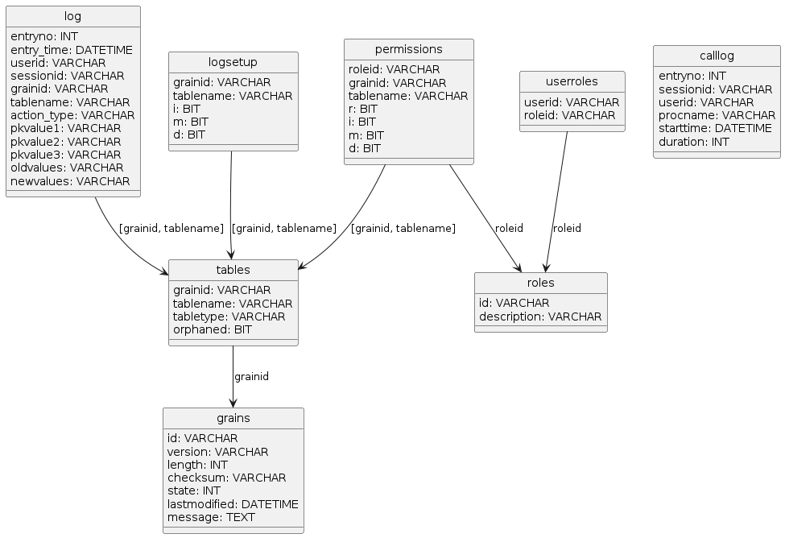
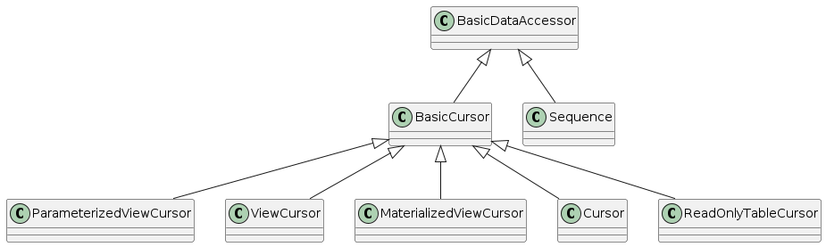
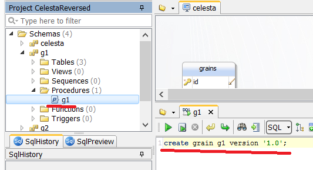

What is Celesta?
Celesta is a tool for Java backend developers who want easier ways to deliver RDBMS-backed software.
This is a Java library with a Maven plugin that provides database migrations, ORM and testing.
Unlike, for instance, Hibernate + Liquibase, Celesta does not require one to keep in mind the schema design and migrations separately, and provides a fast and lightweight way to unit-test the code that works with the database.
It can be used by adding a Maven dependency to your project, and it also has its own Spring Boot starter.
Main Features
-
Independence from database type. Solutions created in Celesta can be transferred between all supported databases without losing functionality. We support the following types of RDBMS and try to do it in the most transparent manner possible (the list is not final):
-
MS SQL Server;
-
Oracle;
-
Postgre SQL;
-
H2;
-
Firebird (beta).
-
-
Database-first data structure design. Celesta is used to design tables, views and connections between them first instead of classes, which are generated automatically.
-
Database structure automatic migration based on idempotent DDL.
-
Simplified unit testing: quick tests of code that interacts with the database, based on H2 database in-memory operation mode.
-
Automatically generated intermediary access layer for tables to create business logic based on the database structure.
-
Application interaction with an existing database (application integration via database).
-
Permissions management.
-
Data changes auditing.
1. Part 1. Quick Start
1.1. Demo
1.1.1. Celesta and Spring Boot
Demo project illustrating Celesta capabilities for Spring Boot is available at: https://github.com/inponomarev/celesta-demo/.
To create a Spring Boot project use the following Maven dependencies:
<properties>
<!-- Check for the latest version of ru.curs:spring-boot-starter-web at Maven Central -->
<spring.boot.starter.celesta.version>3.0.0</spring.boot.starter.celesta.version>
<!-- Check for the latest version of ru.curs:celesta-parent at Maven Central -->
<celesta.version>8.0.1</celesta.version>
</properties>
. . .
<dependencies>
<dependency>
<groupId>org.springframework.boot</groupId>
<artifactId>spring-boot-starter-web</artifactId>
</dependency>
<dependency>
<groupId>ru.curs</groupId>
<!-- Own Spring Boot starter simplifies Celesta configuration in Spring Boot applications -->
<artifactId>spring-boot-starter-celesta</artifactId>
<version>${spring.boot.starter.celesta.version}</version>
<!-- Exclude dependency on Celesta, specified in Celesta spring boot starter
to enter a more recent Celesta version number -->
<exclusions>
<exclusion>
<groupId>ru.curs</groupId>
<artifactId>celesta-system-services</artifactId>
</exclusion>
</exclusions>
</dependency>
<dependency>
<!-- Connect a more recent version of Celesta than Spring Boot Starter propose-->
<groupId>ru.curs</groupId>
<artifactId>celesta-system-services</artifactId>
<version>${celesta.version}</version>
</dependency>
...
</dependencies>ru.curs:celesta-maven-plugin is used to generate the code of data access classes.
Specify the path to the score folder in its settings:
<build>
<plugins>
<plugin>
<groupId>ru.curs</groupId>
<artifactId>celesta-maven-plugin</artifactId>
<version>${celesta.version}</version>
<executions>
<execution>
<goals>
<goal>gen-cursors</goal>
<goal>gen-score-resources</goal>
<goal>gen-test-cursors</goal>
<goal>gen-test-score-resources</goal>
</goals>
</execution>
</executions>
</plugin>
</plugins>
</build>Add database definition scripts in CelestaSQL language to the src/main/celestasql folder.
For example,
-- celestasql/ru/curs/demo/demo.sql
CREATE SCHEMA demo VERSION '1.0';
/**Order header*/
CREATE TABLE OrderHeader(
id VARCHAR(30) NOT NULL,
date DATETIME,
customer_id VARCHAR(30),
/**Costumer name */
customer_name VARCHAR(50),
manager_id VARCHAR(30),
CONSTRAINT Pk_OrderHeader PRIMARY KEY (id)
);
/**Order line*/
CREATE TABLE OrderLine(
order_id VARCHAR(30) NOT NULL,
line_no INT NOT NULL,
item_id VARCHAR(30) NOT NULL,
item_name VARCHAR(100),
qty INT NOT NULL DEFAULT 0,
cost REAL NOT NULL DEFAULT 0.0,
CONSTRAINT Idx_OrderLine PRIMARY KEY (order_id, line_no)
);
ALTER TABLE OrderLine ADD CONSTRAINT fk_OrderLine FOREIGN KEY (order_id) REFERENCES OrderHeader(id);
create materialized view OrderedQty as
select item_id, sum(qty) as qty from OrderLine group by item_id;mvn verify command generates OrderHeaderCursor.java
and OrderLineCursor.java files with cursor classes in the target/generated-sources/celesta/… folder.
Those classes can be used to create services (see the more comprehensive demo):
@Service
public class DocumentService {
@CelestaTransaction
public void postOrder(CallContext context, OrderDto doc) {
try (OrderHeaderCursor header = new OrderHeaderCursor(context);
OrderLineCursor line = new OrderLineCursor(context)) {
. . .
}
}Any method available in Spring Boot can be used to configure your project’s settings, including the application.yml file.
1.1.2. Using Celesta with Spring-JDBC
Celesta utilizes its own built-in JDBC connection pool if no other option is provided.
If you want to configure a specific connection pool, or if you want to utilize the DataSource provided by the Spring framework, you can do so.
In standalone application you can use Celesta.createInstance method providing a DataSource in its parameter.
spring-boot-starter-celesta will utilize a DataSorce when it is provided by Spring.
For example, if you add the following dependency:
<dependency>
<groupId>org.springframework.boot</groupId>
<artifactId>spring-boot-starter-jdbc</artifactId>
</dependency>and the following configuration parameters to application.yml
spring:
datasource:
url: jdbc:postgresql://<DATABASE>
username: <USER>
password: <PWD>
hikari:
auto-commit: false
celesta:
jdbc:
url: jdbc:postgresqlCelesta will run with Hikari Connection Pool provided by Spring. Please note the following:
|
2. Part 2. Celesta Technical Details and Setup
2.1. Key Term Vocabulary
- Score
-
Entirety of database schemas used in the given instance of Celesta, presented as CelestaSQL scripts.
- CelestaSQL script
-
A text file defining the following:
-
database schemas. Note: due to historical reasons, "schema" in Celesta is synonym to "grain";
-
tables, including information on
-
fields and their types (a set of data types available in Celesta is selected in order to provide compatibility with all the supported databases);
-
table primary key it is necessary for operation of data access classes;
-
DEFAULTfield values; -
NOT NULLfield restrictions;
-
-
indices;
-
sequences;
-
foreign keys;
-
views, including materialized views and functions.
-
As a result of Celesta Maven Plugin work, the data access classes are generated on the basis of these scripts and SQL files themselves are copied to the resources of the compiled .jar files.
During its startup, Celesta automatically migrates the database structure to the state defined by the CelestaSQL scripts.
- Schema version tag
-
A version identifier in the form of a list of components separated with commas, explicitly provided by the developer in the
CREATE GRAIN … VERSION …command. It prevents unintentional automatic database downgrade at the launch of an older version of CelestaSQL with a newer version database. Automatic database migration never takes place if the database version tag is higher than the grain script version tag or the versions do not align. - Grain checksum
-
An automatically calculated script checksum. Helps to differentiate CelestaSQL scripts by their contents. CelestaSQL scripts with identical version tags might intentionally (during development) or unintentionally (due to developer’s carelessness) have different contents. Database created automatically using CelestaSQL script not only has a version tag, but also contains a grain creation script checksum to give an opportunity to track the moment it was connected by an application with an altered database definition script. Simultaneous match of a version tag and a grain checksum is enough to continue operation without trying to upgrade the database structure. To simplify verification and ensure the algorithm transparency, the checksum consists of two values: the script file length (written down as a decimal integer) and its CRC32 (written down as eight hexadecimal integers).
- Celesta system grain
-
A special grain with an unchangeable table structure. This grain’s tables are used for the system’s internal needs. At the same time, recording and editing the data in some of these tables are standard procedures during system configuration. See the "celesta" grain description in the System Tables section.
- Celesta.grains table
-
The main system table of the database. Existence of the table indicates that Celesta is connected to the corresponding database, otherwise it will try to create one from scratch. The table contains information on state of grains in the database. Field description can be found in the Celesta System Tables section. Information from this table is used extensively during startup sequence.
- Grain startup sequence
-
Sequences executed by Celesta for every grain on startup. The database migrates automatically if necessary and possible.
- Automatic database migration
-
Part of the startup sequence, which involves comparing the existing database structure to Celesta score set by grain creation scripts. After comparison, the differences are eliminated with automatically created and executed CREATE/ALTER SQL commands.
- Data access class (cursor)
-
A class generated automatically on the basis of CelestaSQL script and used for interaction with table, view and sequence data.
2.2. Maven Plugin
Celesta Maven plugin generates the code of data access classes on the basis of CelestaSQL scripts. Adding this plugin is mandatory for projects using Celesta.
Usage example:
<plugin>
<groupId>ru.curs</groupId>
<artifactId>celesta-maven-plugin</artifactId>
<version>${celesta.version}</version>
<configuration>
<scores>
<score>. . .</score>
</scores>
<testScores>
<testScore>. . .</testScore>
</testScores>
<!-- unnecessary, true by default -->
<snakeToCamel>true</snakeToCamel>
</configuration>
<executions>
<execution>
<goals>
<goal>gen-cursors</goal>
<goal>gen-score-resources</goal>
<goal>gen-test-cursors</goal>
<goal>gen-test-score-resources</goal>
</goals>
</execution>
</executions>
</plugin>Plugin configuration settings:
-
scorespath to the project folders containing CelestaSQL scripts describing the working database. By default the path issrc/main/celestasql. -
testScorespath to the project folders containing CelestaSQL scripts describing the database, used only for unit testing. By default the path issrc/test/celestasql. -
snakeToCamel(boolean, true by default) whether tables and fields named in "snake_case" in CelestaSQL should be transformed to "CamelCase" in data access classes in order to meet naming conventions in Java.
Celesta Maven Plugin executes the following operations:
-
Generates code for cursors based on CelestaSQL:
-
During the
generate-sourcesphase the cursors are generated fromscoresand optionallyscorefolder totarget/generated-sources/celesta; -
During the
generate-test-sourcesphase fromtestScorestotarget/generated-test-sources/celesta.
-
-
Copies CelestaSQL files to resources:
-
During the
generate-resourcesphase CelestaSQL files are copied fromscoresand optionally thescorefolder togenerated-resources/score; -
During the
generate-test-resourcesphase fromtestScorestogenerated-test-resources/score.
-
-
Generates the
score.filesindex containing the list of relative paths to .sql files in resources:-
During the
generate-resourcesphase togenerated-resources/score/score.files; -
During the
generate-test-resourcesphase togenerated-test-resources/score/score.files.
-
These files are used when running Celesta to find paths to all CelestaSQL files in .jar files on classpath.
2.3. Celesta Startup Operations
2.3.1. General Operation Sequence
Celesta initialization goes in several stages, which is illustrated by the log output:
Celesta ver. 7.2.4
Celesta pre-initialization: system settings reading...
done.
Celesta initialization: score parsing...
done.
Celesta initialization: database upgrade...
done.-
During system settings reading Celesta analyses the setting configuration state, checks if all mandatory settings are set and configured correctly. If any errors are found the startup interrupts.
-
During score parsing all available *.sql files are read, their syntax is analysed and an internal database object model (score) is created. The system collects information about grains, tables and fields from CelestaSQL scripts. Checksums are calculated and versions are determined. If syntax errors occur or CelestaSQL scripts are not consistent, the system startup halts at this stage.
-
Automatic database migration.
2.3.2. Automatic Database Migration
At this stage the application server connects to the database and checks the existence of the celesta.grains system table.
If the table does not exist, it is created automatically (via CREATE command), but only in the following cases: 1) the database is completely empty; 2) force.dbinitialize parameter is set (to prevent "corruption" of existing non-empty databases if Celesta connects to them by mistake).
If an error occurs during celesta.grains table existence check / creation, a fatal error is generated and the system does not launch.
Determining if the Automatic Migration is Needed for a Grain (Schema)
Next the process repeats for all grains (schemas) available in the score and all grains available in celesta.grains (this excludes grains, declared with WITH NO AUTOUPDATE option in CelestaSQL script).
-
If the grain exists in the score but not in
celesta.grains, upgrade is executed by a CelestaSQL script (it is assumed that the corresponding tables may already exist in the database). -
If the grain exists in
celesta.grainsbut not in the score, nothing happens. Grains are never deleted from the database automatically as their tables may contain important information. Instead, the data access classes are not created for such tables. -
If the grain exists both in
celesta.grainsand the score, Celesta looks up the corresponding entry incelesta.grainsfor the state, version, and checksum of the grain that was installed during the latest migration. Then Celesta compares this information to the current grain version and checksum. The grain state recorded incelesta.grainstable may have one of the following values:-
recover (3) proceed as if no entry exists (see p. 1);
-
lock (4) the structure of the current grain should not be upgraded, go to the next grain;
-
upgrading (1) or error (2) the process interrupts with an error prompt Cannot proceed with the database upgrade: there are grains not in 'ready', 'recover' or 'lock' state;
-
ready (0) continue the process.
-
If versions and checksums of the current and the previously installed grains match, nothing happens. System assumes that the structure of the corresponding database schema is consistent with the current CelestaSQL script and reduces the time necessary to analyse the existing structure.
-
If versions and checksums do not match: if the version is higher, upgrade is carried out regardless of the checksum. If it is lower or the version is incompatible (see the version tags operation logic description), the launch interrupts with an error prompt Grain '…' version '…' is lower than / is inconsistent with database grain version '…' . Will not proceed with auto-upgrade. regardless of the checksum.
-
If versions match but the checksum does not, the score is upgraded.
-
-
Grain (Schema) Migration Procedure
If the algorithm leads the system to require a grain upgrade, the database structure and the data structure described in the CelestaSQL script start to synchronize. All missing objects are created tables, fields, keys, indices, views, etc. Objects in need of alteration (e.g. field data types, field composition in the index or SQL view requests) are altered. The system makes effort to have it done automatically and without any errors. Sometimes it is possible in every scenario (e.g. when a SQL query of a view is changed or a field set of an index is changed), sometimes manual intervention and executing an ad hoc script are unavoidable (see the post on idempotent migrations). Errors at this stage lead to grain transition to an error state and demand manual intervention by a database administrator.
If an object is deleted from the CelestaSQL script, auto-migrator removes from the database only the stateless objects (i.e. tables and fields are not auto-deleted and can be deleted manually in an ad hoc migration script, external keys are deleted from the deleted fields) to prevent data lose.
2.3.3. Total or Partial Disabling of Automatic Migration
Celesta features several methods to disable automatic migration:
-
at the level of the entire database using
skip.dbupdateoption in the settings; -
at the schema level by setting its state in the celesta.grains table to 4 or by declaring the
WITH NO AUTOUPDATEoption in the grain (schema) creation statement; -
at the table level by declaring the
WITH NO AUTOUPDATEoption in the table creation statement.
2.4. Basic Settings
Celesta configuration parameters include general system parameters such as database connection properties.
These settings are passed to a BaseAppSettings constructor as a Properties instance, and the BaseAppSettings instance, in turn, is a Celesta constructor parameter.
When using Celesta Spring Boot starter
these settings are defined by any Spring Boot application configuration method available, for example, using an
application.yml file.
In that case, the YAML file root key has to be celesta, and other properties are recorded in the hierarchical structure.
For example, to set the properties of jdbc.url, jdbc.username and jdbc.password the application.yml file structure must be the following:
celesta:
jdbc:
url: jdbc:postgresql://127.0.0.1:5432/celesta
# url: jdbc:sqlserver://172.16.1.114:52836;databaseName=celesta
# url: jdbc:oracle:thin:192.168.110.128:1521:XE
username: foo
password: barSome IDE, like IntelliJ IDEA, provide auto-completion when editing the application.yml file.
| Parameter | Purpose | Mandatory | Default value |
|---|---|---|---|
( |
JDBC connection URL |
Yes |
- |
( |
Database login |
No (if empty, the JDBC URL is used) |
- |
( |
Database password |
No (if empty, the JDBC URL is used) |
- |
|
Forces the system to completely skip the database upgrade phase (including creating the system tables) on startup . This parameter is required in some scenarios of deploying Celesta over an existing database. |
No |
|
|
Forces the system to create Celesta system object even if the database is non-empty (contains tables) on startup. Caution is advised when using this parameter because it may damage the existing database. This parameter is required in some scenarios of deploying Celesta over an existing database. |
No |
|
|
|
No |
|
|
When the value is an integer and |
No |
|
|
Defines the use of the foreign keys referential integrity checks, when working with an H2 database in in-memory mode (for all other databases this parameter is ignored). By default the referential integrity checks are disabled when working with an H2 database in in-memory mode to simplify autotest creation. |
No |
|
2.5. System Tables
2.5.1. Structure of celesta System Schema
Celesta system adds to the database not only user-defined tables and schemas, but also tables in its own celesta system schema, the structure of which is presented in a diagram below.
The structure (including the fields) of the Celesta system grain tables is unchangeable and access to data in them is provided by built-in ru.curs.celesta.syscursors package classes. At the same time, changing data in these tables is part of standard system configuration.
System tables are used to:
-
coordinate automatic migration (
grainstable); -
manage the access permissions to tables and views (
permissions,roles,userroles); -
configure the logging system (
logsetup) and log storage (log,calllog).

Purpose of tables:
- celesta.grains
-
List of grains including states. Managed automatically, manual changes by the solution developer are limited to setting the "recover" state to grains after failed attempts to upgrade automatically and deleting entries related to deleted grains.
- celesta.tables
-
List of tables and views. Contents of this table automatically synchronize with the list of tables and views available in Celesta grains, the user should not interfere with the data in this table (the changes will be lost during the next synchronization anyway). Table type field indicates whether the entry is a table ("T") or a view ("V").
- celesta.roles
-
List of celesta roles. Roles are added here and roles with system names "reader", "editor", etc. are stored here (see the Permissions Management section for more information on roles with system names).
- celesta.userroles
-
Connections between user IDs (logins) and roles. Filled in by the administrator.
- celesta.permissions
-
Permissions for roles to work with tables. Filled in by the administrator.
- celesta.logsetup
-
Logging setup. Filled in by the administrator.
- celesta.log
-
Changelog. New entries are automatically appended by the system each time the data is changed, but only for tables and actions specified in
celesta.logsetup. - celesta.calllog
-
Method calls log. Records are made by the system while in profiling mode.
2.5.2. Celesta.grains Table
This table is the vital Celesta system table as its contents manage the database structure synchronization with the score at the system’s launch. It contains the following fields:
| Field name | Field type | Field value |
|---|---|---|
|
|
grain ID |
|
|
grain version tag |
|
|
grain CelestaSQL script length in bytes |
|
|
grain CelestaSQL script CRC32 |
|
|
grain state:
|
|
|
date and time of the latest grain modification |
|
|
comment (for example, notification about an error during the latest failed autoupgrade) |
2.5.3. Permissions Management
As the table structure shows, table access rights are granted to roles and are not meant to be directly granted to users.
The roleid field contains the role identifier and grainid and tablename fields contain references to the tables.
Flags are set in bit fields "r", "i", "m" and "d" if the rights are needed for reading, insertion, modification or deletion respectively.
Special system role names are available: reader and editor, as well as <grain ID>.reader and <grain ID>.editor.
The reader role grants the right to read all tables without any exceptions, the <grain ID>.reader (for example, "foo.reader") grants the right to read all tables in the respective grain.
The editor role grants full rights (to read, insert, modify and delete) to all tables. The <grain ID>.editor role (for example, "foo.editor") grants full rights to all tables in the respective grain.
2.5.4. Logging System
Not only the access rights granting system is involved in any data modification via Celesta cursors, but also a modification logging system, which logs all changes to the celesta.log tables. In order to prevent the celesta.log table from being littered with potentially huge amounts of unnecessary data, the changes are logged only in the tables explicitly specified in the celesta.logsetup table. There is also an option to separately enable logging of entry insertions, modifications and deletions.
In order to enable logging data changes made via Celesta system, it is necessary to enter the relevant settings in the celesta.logsetup table. The "grainid" and "tablename" fields should contain a link to the table and flags are set in bit fields "i", "m" and "d" if it is needed to log insertion, modification and deletion respectively.
The celesta.log table consists of the following fields:
| Field ID | Field type | Field value |
|---|---|---|
|
|
autoincremented integer entry number in the log table |
|
|
entry time |
|
|
ID of the user making the change |
|
|
ID of the session during which the change is made |
|
|
grain ID |
|
|
table name |
|
|
action type ("I" for insertion, "M" for modification and "D" for deletion) |
|
|
primary key first field value (if any, cast to the text type) |
|
|
primary key second field value (if any, cast to the text type) |
|
|
primary key third field value (if any, cast to the text type) |
|
|
old entry state (the fields are cast to the text type, the list is separated with commas in CSV format and the information is cropped to match the length of the field. Values are filled in for "M" and "D" actions |
|
|
current entry state in the same format as the |
2.5.5. Profiling System
Celesta can operate in a profiling mode for troubleshooting, which is enabled by a setProfilemode(true) mode of a Celesta instance.
Information on all procedure calls in a profiling mode is entered in a calllog table consisting of the following fields:
| Field name | Field type | Field value |
|---|---|---|
|
|
autoincremented integer entry number in the log table |
|
|
ID of the session during which the change is made |
|
|
ID of the user initiating the user session |
|
|
executed procedure name |
|
|
procedure execution start time |
|
|
total procedure execution duration (in milliseconds) |
3. Part 3. Designing Databases Using Celesta
3.1. CelestaSQL
3.1.1. Database Objects Definition Language
| Scripts in CelestaSQL language must be encoded in UTF-8. |
Celesta SQL language is used to write scripts for defining grains. Script in CelestaSQL consists of the following statements
which must be separated with semicolons starting with CREATE GRAIN:
3.1.2. Comments in CelestaSQL
CelestaSQL supports standard single-string and multistring comments, as well as CelestaDoc comments:
-- single-string comment
/*multistring
comment*/
/**CelestaDoc comment*/Standard comments can be used in any part of the text and CelestaDoc comments can be used only right before the grain, table, field or index definition.
3.1.3. Identifiers in CelestaSQL
Identifiers are names of grains, tables, fields, indices, limitations and views. In Celesta, their syntax is subject to a number of stringent limitations.
-
In other RDBMS, identifiers are allowed to contain spaces and non-alphabetical symbols if the names are encased in special symbols, like "[]" in MS SQL Server. This means that MS SQLServer allows table names like this: [Long Table$Name]. Celesta, on the other hand, cannot support spaces and non-alphabetical symbols in IDs because the name of every Celesta table must be the name of a Java class and the name of every Celesta field must be the name of a Java variable. So IDs of all named objects in CelestaSQL must at least meet the naming requirements for Java identifiers, i.e. they must contain only lower- and uppercase Latin letters, numerals and underscores and must not start with numerals.
-
Encasing identifiers with quotation marks in CelestaSQL scripts is not allowed at the CelestaSQL syntax level since there is no practical need to do that (names never contain spaces). However, when forming requests to RDBMS at the system level, Celesta always encases names of its objects with strait marks ("ANSI quotes") to prevent Oracle, PostgreSQL and H2 databases from changing ID letter register.
-
Identifiers in Celesta are case-sensitive, but it is impossible to create two tables with names different only in letter register.
-
The length of every identifier in Celesta cannot exceed 30 characters.
-
In addition, grain identifiers cannot contain underscores. This is because combining grain names with underscores and other identifiers often used for Celesta internal needs, this restriction helps to prevent possible ambiguities.
| It is a usual practice to write identifiers in CelestaSQL in "snake_case" — when transformed to Java classes, they will be converted to 'CamelCase'. |
3.1.4. CREATE SCHEMA (GRAIN) Statement
Every grain definition script must start with CREATE SCHEMA.
The following syntax is used (words GRAIN and SCHEMA are synonyms):
WITH NO AUTOUPDATE clause excludes the whole schema from the database autoupdate process, just like the similar table option.
It can be used when the schema structure is managed not by Celesta, but by some external system.
Version indication is mandatory to rule out unintentional database automatic downgrade when an older grain version launches with a more recent database version.
In this sense the following tags to the "1.23,TITAN3.34" tag are:
-
"1.23,TITAN3.35" a newer version (modification is upgraded), autoupgrade is possible;
-
"1.24,TITAN3.34" a newer version (basic version is upgraded), autoupgrade is possible;
-
"1.23,TITAN3.34,PLUTO1.00" a newer version (a new modification is added), autoupgrade is possible;
-
"TITAN3.34,1.23" the same version (tag sequence does not matter), autoupgrade takes place only if checksums do not match, no errors will occur;
-
"1.22,TITAN3.34" an older basic version, autoupgrade is not possible, an error will occur and Celesta will stop;
-
"1.22,TITAN3.36" a non-aligned version, upgrade is not possible, error. Versions "1.23,PLUTO1.00" and "1.25" also do not align with "1.23,TITAN3.34" version and will not upgrade automatically.
Versions are compared as floating point values.
3.1.5. CREATE SEQUENCE Statement
The following syntax is used:
Main limitations and differences between this statement and similar statements in various RDBMS are:
-
If the
MINVALUEis not indicated, it is automatically set equal to theSTART WITHvalue (by default 1). -
If the
MAXVALUEis not indicated, it is automatically set equal to theLong.MAX_VALUE. -
The
START WITHvalue does not upgrade for sequences created earlier even if changed in the grain file (because Oracle allows this operation only by deleting and recreating the sequence and Celesta does not allow deleting stateful objects from the database). -
If the grain contains a table with a name, for example,
A, it is not possible to create a sequence namedA_seq, since this name is reserved by the system.
3.1.6. CREATE TABLE Statement
The following syntax is used:
In other words, the CREATE TABLE statement can list the definitions of fields, primary keys and foreign keys in any order in the brackets and options can be listed after them.
In practice, first definitions of all fields follow each other, then go composite primary keys (a single-field primary key can be defined in the field itself) and composite foreign keys (if single-field, they can be defined in the fields themselves).
Field Definitions
field_definition is a statement defining the field type, its ID, NULL/NOT NULL and DEFAULT properties and optionally may end with PRIMARY KEY and/or FOREIGN KEY statements.
Inline foreign key definition (inline_fk_definition) has the following syntax:
Here table_ref is a reference to a table, either single-component (if the table indicated by the foreign key is in the current grain) or bicomponent, explicitly indicating the grain name:
Syntax rules for foreign keys (fk_rules) can be found in the Foreign Key Rules section.
Data Types
The following data type system is used.
| Celesta | Microsoft SQL Server | Oracle | PostgreSQL | Firebird | H2 | Java type for cursor | |
|---|---|---|---|---|---|---|---|
Integer (32-bit) |
INT |
INT |
NUMBER |
INT4 |
INTEGER |
INTEGER |
java.lang.Integer |
Floating point (64-bit) |
REAL |
FLOAT(53) |
REAL |
FLOAT8 [= DOUBLE PRECISION] |
DOUBLE PRECISION |
DOUBLE |
ava.lang.Double |
Fixed point (decimal) |
DECIMAL(p,s) |
DECIMAL(p,s) |
NUMBER(p,s) |
NUMERIC(p,s) |
DECIMAL(p,s) |
DECIMAL(p,s) |
java.math.BigDecimal |
String (Unicode) |
VARCHAR(n) |
NVARCHAR(n) |
NVARCHAR(n) |
VARCHAR(n) |
VARCHAR(n) |
VARCHAR(n) |
java.lang.String |
Long string (Unicode) |
TEXT |
NVARCHAR(MAX) |
NCLOB |
TEXT |
BLOB SUB_TYPE TEXT |
CLOB |
java.lang.String |
Binary |
BLOB |
VARBINARY(MAX) |
BLOB |
BYTEA |
BLOB |
VARBINARY(MAX) |
java.lang.String |
Date/time |
DATETIME |
DATETIME |
TIMESTAMP |
TIMESTAMP |
TIMESTAMP |
TIMESTAMP |
java.util.Date |
Date/time with time zone |
DATETIME WITH TIME ZONE |
DATETIMEOFFSET |
TIMESTAMP WITH TIME ZONE |
TIMESTAMPZ |
TIMESTAMP WITH TIME ZONE |
TIMESTAMP WITH TIME ZONE |
java.time.ZonedDateTime |
Boolean |
BIT |
BIT |
NUMBER [check in (0, 1)] |
BOOL |
SMALLINT [check in (0, 1)] |
BOOLEAN |
java.lang.Boolean |
See also the Notes on Using Supported RDBMS in Celesta section.
Every field type has its own definition version:
The NEXTVAL(<sequence name>) statement can be used for INT type fields instead of DEFAULT <integer>.
This allows column value to increment when inserting depending on the indicated sequence.
It should be noted that it is possible to use only the sequences declared in the same grain as the table containing the column.
Here <binary literal> is a hexadecimal representation of a byte sequence starting with 0x, without any quotation marks, for example: 0xFFAAFFAAFF.
A GETDATE() (current time) function can be used as a DEFAULT value for DATETIME type fields.
Primary Keys
primary_key_definition is a statement defining the composition of fields constituting the primary key of a table. Two version are possible:
-
inline version
PRIMARY KEYgoes right after the field definition, which allows for shorter and more graphic representation when the primary key consists of a single field; -
full version
PRIMARY KEYis in the table definition among other field definitions and can contain a single or any other number of fields.
Restrictions:
-
creating tables without a
PRIMARY KEYis not allowed (exceptREAD ONLYtables). Otherwise data access classes are not operable; -
the table cannot contain more than a single mention of a
PRIMARY KEY, whether shortened in the end of the field definition or composite expression in the table definition; -
creating a primary key by field with
BLOBandTEXTtypes is not allowed; -
creating a primary key by nullable fields is not allowed;
-
primary key expression is not allowed to incorporate any field more than once.
Foreign Keys
foreign_key_definition is a statement establishing connections between tables by one or several fields.
As with the PRIMARY KEY statement, there are two versions of it: inline (incorporated in the field definition, link by one field) and full (listed among field definitions).
In addition, the foreign key can be created without defining the table using "alter table add constraint" statement:
Restrictions:
-
foreign keys, either simple of composite, can refer only to primary keys and only in full (Celesta SQL does not allow
UNIQUErestrictions, so from two possibilities usually provided in RDBMS for foreign keys, it supports only referring to primary key); -
field types must fully match (if the field is a string one, the length of the referring field must be exactly the same as the referred field length);
-
a set of columns cannot have more than one foreign key definition (special case: there cannot be two foreign keys defined for the same column).
fk_rules referring actions:
Supported referring action:
-
NO ACTIONforbidding deletion/modification of the parent entry if links to it exist. -
SET NULLsettingNULLin fields referencing a record being updated or deleted. Naturally, this action is prohibited forNOT NULL-able fields. -
CASCADEcascade field deletion/update.
A foreign key can refer to the following only:
-
a table defined in the current grain above;
-
a table defined in another grain.
| "Looped" references by foreign key (i.e, A→B→C→A kind) are rarely used in database development and usually mean that designer has made a mistake. The only widely used actually important example of "looping" is a table that refers to itself when organizing hierarchical list by parentchild principle. |
Celesta does not allow to create "looped" references between tables belonging to different grains. Use "alter table add constraint foreign key" statement to create a circle of references between several tables in a single grain.
In particular, the example below is actionable:
CREATE TABLE aa(idaa INT NOT NULL PRIMARY KEY, idc INT , textvalue nvarchar(10));CREATE TABLE a (ida INT NOT NULL PRIMARY KEY, descr nvarchar(2), parent INT
FOREIGN KEY REFERENCES a(ida), --the table refers to itself
fff INT FOREIGN KEY REFERENCES aa(idaa) --first part of a circle referenceForeign key created outside the table:
ALTER TABLE aa ADD CONSTRAINT fk1
FOREIGN KEY (idc) REFERENCES a(ida); --second part of a circle referenceExample of creating a composite key consisting of two fields:
CREATE TABLE empfiles(
id INT NOT NULL PRIMARY KEY,
user_id varchar(200) NOT NULL,
orgtype_id varchar(255) NOT NULL,
question_id varchar(30) NOT NULL,
FOREIGN KEY (orgtype_id, question_id) REFERENCES schema.table(field, field)Options
Celesta allows to indicate the following options after defining the table.
The following features are supported:
-
WITH VERSION CHECKdefault mode. Enables entry version tracking to avoid losing updates (see the Lost Update Prevention section). This option does not have to be indicated explicitly. -
WITH NO VERSION CHECKdisables entry version tracking. Used when there is no need to prevent update loses, for example, in tables used only for adding entries. The data in the table can still be modified with this option enabled, but the updates may be lost. -
WITH READ ONLYread-only mode. Used when table data comes from external sources and not updated by Celesta or it is necessary to connect to a table that belongs to a different application and so it is better not to make any changes to its data. In this mode the entry version tracking is disabled and table access class is generated without data modification methods. In addition, it is not necessary to specify primary keys for such tables. -
NO AUTOUPDATEoption disables the auto-migration for the table and can be used together with other options. It is used when the structure of a certain table is changed in the database by other means and the system should not try to autosynch the table’s structure with the definition given by CelestaSQL script.
3.1.7. CREATE INDEX Statement
Indices are used to speed up filtering by table field and are created with the following statement:
Names of indices within a grain must be unique. All indices in Celesta allow non-unique column values.
3.1.8. CREATE VIEW Statement
Views serve to grant read-only access to the data collected from one or several tables with a SELECT SQL query.
Celesta creates a view object for every view and translates the SQL query in CelestaSQL into the respective SQL dialect.
Views are created using the following syntax statement:
-
<view name> must be unique within a grain and must not match the table name.
-
query is a SQL query with the following syntax:
SELECT statements in CelestaSQL can be chained with UNION ALL.
As usual, it is required that each SELECT statement in UNION ALL chain returns the same number of columns of the matching types.
The names of the columns returned by UNION ALL expression are assigned from the respective columns of the first SELECT query.
Columns' nullability is determined the following way: if any of the queries in UNION ALL chain can return null in a column, the column is identified as nullable.
This query key restrictions and differences from SQL queries in various RDBMS are:
-
Queries are based only on tables or materialized views (in the current or neighbouring grains). Queries cannot be created based on ordinary views in order to avoid making ineffective statements.
-
SELECT *statement is not supported and every query field must have a set and unique alias, only if it is not a reference to a table field with a unique name within a query. It allows to unambiguously create class-cursors with fields aligned to the query column names. -
ORDER BYis not supported since orderBy(…) method of the relevant cursor allows to sort the selection in a specific manner. -
GROUP BY…HAVINGstatement is not supported. -
FULL JOIN(LEFTandRIGHTjoins) andCROSS JOIN(table Cartesian products) statements are not supported. -
WITHstatements and nested queries are not supported.
Most functions not supported at the CelestaSQL level can be efficiently emulated with data access classes API.
Reference to a table (table_ref) has the following syntax:
It is not necessary to indicate the grain ID if the table is in the same grain as the current view.
View field defining term has the following syntax:
Common arithmetical operations with normal precedence are available for INT and REAL-typed expressions: unary minus has the highest precedence, next goes multiplication and division ("*", "/") and still next goes adding and substracting ("+", "-").
For VARCHAR expressions concatenation "||" is available, as well as UPPER and LOWER functions that convert text to upper- and lower-case, respectively.
Operations with other types are not allowed.
References to fields may be single-component (if they unambiguously indicate a field of a certain table) or bicomponent, in this case the first component should be the alias of the table in the FROM statement, and if there is no explicit alias table name.
<$param id> special ID type a "$" symbol followed by ID is used for references to function parameters.
At last, the condition logic expression used in JOIN … ON and WHERE statements has the following syntax:
It is important to note that the term inside a SUM statement must be a number.
GROUP BY statement is special in CelestaSQL because unlike the common SQL it is necessary to list all not aggregated columns in the selection.
3.1.9. CREATE MATERIALIZED VIEW Statement
Materialized views serve to grant read-only access to aggregated data collected from a single table and grouped using a GROUP BY expression.
For its every materialized view Celesta creates a table in the database which is modified by database triggers on parent table modification.
Materialized views are created with the following syntax statement:
This query key restrictions and differences from SQL queries in various RDBMS are:
-
Queries are formed only on the current grain’s table.
-
SELECT *statement is not supported. -
Selection must include at least one aggregated and one non-aggregated column.
-
Non-aggregated columns must refer to
NOT NULLcolumns in the parent table. -
If a
DATETIMEtype column is involved in aGROUP BYexpression, its values are rounded to days (hours, minutes and more accurate measurements are truncated). -
Only
SUMandCOUNToperations are available from the set of all aggregate operations.
3.1.10. CREATE FUNCTION Statement
This statement determines functions or parametered views.
They serve to grant read-only access to the data collected from one or several tables using a SELECT SQL query taking into account the given parameters.
Functions are created with the following statement:
Parameters are declared with the parameter name and type set and are separated with commas as follows:
To refer to a parameter in a function expression, a symbol $ must be put before the parameter name (for example, param1 is put in query expressions as $param1).
This query key restrictions and differences from SQL queries in various RDBMS are:
-
SELECT *statement is not supported. -
Declaration must contain at least one parameter.
-
All declared parameters must be used.
Otherwise, a parameterized view syntax is similar to common view.
Parameterized view example:
CREATE FUNCTION pView2(param int, param2 varchar) AS
select f1, f2, f3 from t1
where f2 = $param AND f3 = $param2;3.2. CelestaDoc
Just like Java has JavaDoc for object documentation or Python has a documenting constant available in the run time, CelestaSQL has a special tool to document defined database objects: comments in a special format /** … */ (two asterisks after the first slash, instead of a single asterisk in a standard comment). These comments are called CelestaDoc comments (by analogy with JavaDoc) and can be put in the CelestaSQL script code right before definitions of the corresponding objects as shown in the example:
/**grain description*/
CREATE SCHEMA test1 VERSION '1.0';
/**sequence description*/
CREATE SEQUENCE test_entryno;
/**table description*/
CREATE TABLE table2(
/**first column description*/
column1 INT NOT NULL DEFAULT NEXTVAL(test_entryno) PRIMARY KEY,
/**second column description*/
column2 INT
);
/**idx1 index description*/
CREATE INDEX idx1 ON table2 (column2);
/**v1 view description*/
CREATE VIEW v1 AS
SELECT DISTINCT column2 FROM table2;Unlike simple comments usable in any part of the CelestaSQL script, CelestaDoc comments can be put only before the definition of the corresponding object, otherwise a syntax error occurs.
Parser reads CelestaDoc and this information is available in metadata objects in the run time by using the getCelestaDoc() method (see the Celesta Metadata section).
CelestaDoc comments serve to provide Celesta objects with documentation and additional metainformation during execution, like human-readable field names, information on field representation in UI, etc.
Common practise is to use CelestaDoc comments to provide metainformation in a JSON object format.
CelestaDoc also supports plain text, as well as JSON objects.
The CelestaDocUtils class getCelestaDocJSON utility method allows to extract first valid JSON object from a CelestaDoc string.
4. Part 4. Creating and Testing Data Access and Modification Code
4.1. Creating an Instance of Celesta
4.1.1. Celesta.createInstance Methods
In order to start working with Celesta, a Celesta instance should be created.
Normally, there must be a single Celesta object per application, this is why it must be stored as a singleton or managed by Spring framework.
If you are using spring-boot-starter-celesta, the Celesta instance is created automatically and is available as a bean.
If you want to create and instance of Celesta yourself, you should create Properties holding the Celesta settings and then utilize one of the following static methods on Celesta class:
Celesta createInstance(Properties properties)-
Creates Celesta instance with specified properties and Celesta’s own connection pool.
Celesta createInstance(Properties properties, DataSource dataSource)-
Creates Celesta instance with specified properties and a
DataSource. You can use this method if you want to provide a specific connection pool for Celesta.
|
4.2. Call Context
4.2.1. Call Context Creation and Life Cycle
To meet the requirements for granting access rights and action logging, all operations are performed on behalf of a specific user, anonymous operations are impossible.
This is why Celesta code is executed in a certain context determined by a (CallContext) class instance.
Call context contain user ID, while links between user IDs and roles determine granting access to tables and allow to log changes made on user’s behalf.
Context calls are created at the controller level, where the ID of the user performing operations is assumed to be known (through a token sent to the query, digital signature or other means).
Context is created with a constructor
CallContext(String userId)If there is no need to consider the user ID or grant rights to access the tables, a SystemCallContext subclass can be used, because its constructor does not require any parameters.
In this case, a "system user" context with full access to all tables is created.
Any context created in this way goes through the following life cycle:
-
Activation. An
activate(..)method is called receiving a reference to aCelestaobject and a name of an executed procedure. At this moment an implicit transaction starts in the database and call execution time counting begins. -
Calling a service method. Context is passed as a parameter to a service method and is used to create cursors.
-
Closing. A
close()method is called committing the transaction and closing all open cursors and freeing all JDBC resources.
Developer does not usually need to manually activate and close contexts since Celesta framework performs it automatically.
-
When using Celesta Spring Boot starter, cursors are activated and closed when calling methods of services marked by a
@CelestaTransactionannotation. So for the developer it is enough to pass a nonactivated context to them. Proxy object created by Spring framework around a service class instance will activate and close context and roll back database transactions if an uncaught exception is thrown. -
When using CelestaUnit, an activated system context on the basis of Celesta running with a H2 database in an in-memory mode is passed to test methods' parameters of a
CallContexttype. Context closing and commits/rollbacks are performed by CelestaUnit automatically "under the hood".
4.2.2. Call Context Usage
Each method in the service layer using Celesta must have an argument of a ru.curs.celesta.CallContext type.
Call context is intended to be an argument for cursor constructors,
but it also has a number of public methods and properties available, feasible to be used in a service method:
- commit()
-
Commits the current transaction. A need in this method occurs only in rare cases when data processing transaction should be split in several parts. Usually it is not needed as transactions are committed automatically at the end of the procedure.
- rollback()
-
Rolls back the current transaction.
- getCelesta()
-
Gets a current instance of a Celesta object. It can be further used to obtain score metadata.
- getUserId()
-
Get an ID of the user on whose behalf the actions are performed.
- getStartTime()
-
Gets a call context creation time (the Celesta procedure start time got with
System.currentTimeMillis()). - getDurationNs()
-
Gets a call context duration in nanoseconds measured as a difference between values returned by
System.nanoTime()calls. - getProcName()
-
Gets the name of the procedure called initially from the controller (for debugging).
- getDBPid()
-
Gets PID (process identifier) of the current connection to the database (for debugging).
4.3. Working with Data Using Data Access Classes (Cursors)
4.3.1. Access Classes and Their Standard Methods
For each table and view declared in CelestaSQL data access classes are generated.
Each instance of a data access class (which are also going to be called "cursors") at each moment holds information about a single database record (row) and every row’s field of the cursor has a corresponding object field. It is possible to move cursor across records taking into account filters and ordering. If a cursor is created from a table, it can also be used to insert, modify or delete data. View cursors only allow row navigation methods.

The UML diagram illustrates data access class hierarchy.
Hierarchy is based on a BasicDataAccessor class.
Each cursor class inherits from the BasicCursor class, Sequence class inherits from the BasicDataAccessor:
- Cursor
-
Is used to work with tables. It inherits all
BasicCursormethods and also adds a number of its own methods to allow data modification. - ViewCursor
-
Is used to work with views. It does not add any own methods to
BasicCursor. - MaterializedViewCursor
-
Is used to work with materialized views. It inherits all
BasicCursormethods and also adds a number of its own methods to make possible accessing data by the primary key. - ParameterizedViewCursor
-
Is used to work with functions (parameterized views). It does not add any own methods to
BasicCursorbut its constructor differs from the basic one. - ReadOnlyTableCursor
-
Is used to work with tables declared "WITH READ ONLY". It does not add any own methods to
BasicCursor. - Sequence
-
Is used to work with sequences. It inherits all
BasicDataAccessorclass methods and adds anextValuemethod.
Below Cursor class methods are described, but the methods that are inherited from BasicCursor (and can be used when working with views and read-only tables) are marked with a symbol.
Cursor Fields' Metadata
A Columns companion class is generated for each cursor class to participate in invocation of certain cursor’s methods and to make it easier to obtain the information about available cursor’s fields in the run time.
Companion is an inner static class inside the cursor.
For example, for FooCursor class the companion is FooCursor.Columns.
Each cursor field has a corresponding method in a Columns class returning the metadata of a corresponding column as illustrated in the diagram:

A corresponding instance of a Columns class is available in each cursor instance through a public final Columns COLUMNS field.
In addition, the Columns class of each cursor can be instantiated independent of the cursor its constructor has an ICelesta parameter.
Using code generated Columns class methods to get table field references ensures code integrity when changing data schema (for example, when deleting or renaming fields in the database).
Cursor Constructor
Constructors of each cursor require a CallContext context parameter which in turn is given to each service layer method.
Context use allows to work with different system tables as part of a single transaction and then commit all changes in a unified manner.
Context variable also contains information on the current user, which is used by logging and permission management systems.
For classes inherited from Cursor, ViewCursor, MaterializedViewCursor and ReadOnlyTableCursor types the constructor can take the following form:
ACursor a = new ACursor(context);|
Maximum number of cursors a single instance of This does not restrict sensible scenarios of working with data in the database and prevents JDBC resource leakage, for example if cursors are created in a loop. When creating cursor in a loop it must be closed explicitly. |
Limiting the Number of Columns Fetched
Tables often have many defined fields, but only a few of them are needed for tasks at hand.
There is a way to query only necessary column values from the database when creating cursors to prevent transferring unnecessary information between the database and the application server and increase performance.
To do it, a list of fields for querying must be passed as a cursor’s constructor optional "varargs" parameters.
Fields excluded from the list take null values when the cursor navigates database records.
Let us assume the database has table1 filled with data:
create table table1 (
id int not null primary key,
numb int not null,
numb2 int,
varr varchar(2) not null
);Assume the developed solution does not need to select data from the "varr" column. In this case, to create a cursor it is possible to indicate the needed columns. Cursor creation will look as follows:
//initiate companion object containing information on columns
Table1Cursor.Columns columns = new Table1Cursor.Columns(context.getCelesta());
//transfer a list of desired columns in additional arguments of the constructor
Table1Cursor tableCursor = new Table1Cursor(context, columns.numb(), columns.numb2());Now Celesta will not select varr columns when requesting data from the database varr column, and varr field of the tableCursor will always have a value of null.
Peculiarities of limiting columns in a selection are:
-
Columns of a primary key always get into cursor from the database regardless of whether they are on the list of fields. It ensures correct operation of the cursor navigation methods when limiting columns.
-
Columns mentioned in a "group by" materialized view expression always get into cursor from the database.
-
When passing empty field list or if there is no list, all the columns are selected.
-
Use of
BLOBcolumns does not change. By default, data from these fields is never read from database during navigation and this data can always be retrieved by calling a separate method.
Passing Parameters to Functions (Parameterized Views)
It is necessary to note that the ParameterizedViewCursor cursor has its own version of a constructor that contains function arguments.
Let us assume that there is a table and a function for selecting from it.
CREATE table t1 (
id INT NOT NULL IDENTITY PRIMARY KEY,
f1 int,
f2 int,
f3 VARCHAR (2)
);CREATE FUNCTION pView1(p int) AS
select sum (f1) as sumv, f3 as f3
from t1 as t1
where f2 = $p
group by f3;To create a cursor for a function with a parameter p = 5 the following code must be executed:
PView1Cursor pView1 = new PView1Cursor(context, 5);Passing parameters to a function can be combined with limiting the fetched fields set. In order to do it first it is necessary to pass the parameters corresponding to mandatory cursor arguments and then the list of fields for selection as "varargs" arguments.
Changing Cursor Fields
Cursor class have fields containing getters and setters for each declared table fields allowing to read and write information. For instance, if foo table is defined as follows:
CREATE TABLE foo (
a INT NOT NULL PRIMARY KEY,
b VARCHAR(10),
c DATETIME,
d BIT
)then to insert a record in it the following code can be utilized:
FooCursor foo = new FooCursor(context);
foo.setA(1);
foo.setB("text");
foo.setC(new GregorianCalendar(year, month, day).getTime());
foo.insert();Correspondence between CelestaSQL and Java data types is described in the table.
Note the Date class use when writing date value: this is a JDBC API restriction.
If needed to fill the "" field with current date and time the following expression can be utilized:
foo.setC(new Date());Changing the BLOB field values is described in the BLOB Fields section.
Special getRecversion() attribute in the cursor exists for "recversion" system field value which is necessary for the lost update prevention mechanism.
Every cursor has the following methods ( symbol indicates methods inherited from BasicCursor and usable when working with read-only views and tables):
Cursor Closing
-
close() cursor closing (implements a
closemethod ofjava.io.Closeableinterface). This method frees all JDBC resources allocated during the cursors’s existence. A navigation or update method invocation on a closed cursor causes an error. This method is not necessary to call since it is called automatically after closingCallContexton all cursors created with it. In general, good practice in programming is to create as few cursors as possible during the procedure and use them repeatedly. Still if a need arises to create more cursors, e. g. in a loop, one should useclose()method at the moment the instance of a cursor is not needed.
Record Navigation Methods
-
tryGet(…) conducts searching for the record by given key fields and returns
trueif the record is found orfalseif the table contains no record with the given primary key. This method’s arguments must specify primary key field values and number of arguments must match the number of primary key fields in the table. -
get(…) same as
tryGetbut throws an exception if the record is not found. -
tryGetCurrent() retrieves a record from the database that corresponds to the fields of current primary key.
|
|
-
navigate(command) moves around records relative to the current position. Returns
trueif the movement is successful andfalseif the record is not found. Thecommandstring can be an set of the following symbol commands in any order, executed consecutively until the record is found (or all commands are executed):-
- (minus) go to the first record matching the filter criteria;
-
+ (plus) go to the last record;
-
> go to the next record relative to the current matching filter criteria;
-
< go the the previous record;
-
= update the current record if it matches current filter criteria.
-
-
tryFirst() same as
navigate('-'). -
first() same as
tryFirst(), but throws an exception if the record is not found. -
tryLast() same as
navigate('+'). -
last() same as
tryLast(), but throws an exception if the record is not found. -
next() same as
navigate('>'). -
previous() same as
navigate('<'). -
tryFindSet() opens a record set (
ResultSet) and sets a cursor in its beginning. Returnstrueif the opened set is not empty andfalseif there are no records in the set. -
findSet() same as
tryFindSet(), but throws an exception if the movement has failed. -
nextInSet() go to the next record in the current set. If the set has not been opened, calling this method equals calling
tryFindSet(). Returnstrueif the movement is successful andfalseif the end of the set is reached. -
iterator() returns an iterator allowing to perform a full iteration across the whole set of records. Implements the corresponding
java.lang.Iterableinterface method. For example, ifrecvariable contains an instance of a cursor, the full iteration usingiterate()method can be performed as follows:
for (FooCursor r: rec): {
/* the cycle contains everything
you want to do with records r */
}and it will be entirely similar to the following code:
if (cursor.tryFindSet()) {
while (cursor.nextInSet()) {
//cycle
}
}
|
Ranging and Filtering Methods
-
setRange(ColumnMeta<?> column) resets any filter in the field.
-
setRange(ColumnMeta<? super T> column, T value) sets a single-value range in the field. Passing
nullas an argument causes setting an 'IS NULL' filter in that field. -
setRange(ColumnMeta<? super T> column, T valueFrom, T valueTo) sets range "from … to and including" in the field (at the SQL language level corresponds to a BETWEEN operator). It is not allowed to use
nullas an argument. -
setFilter(ColumnMeta<?> column, String value) sets a filter in the field, filter expressions are described below.
-
setComplexFilter(String value) sets a complex filter to the table. Corresponds to a
WHEREcondition for queries in CelestaSQL. -
setIn(BasicCursor auxiliaryCursor) sets a filter with a nested query.
setInuse is described below. -
limit(long skip, long limit) sets limits to the returned row range. Parameters must be non-negative integers. The
skipparameter is the number of rows skipped before returning (skip = 0start from the very beginning), thelimitparameter is the maximum number of returned rows, wherelimit = 0indicates that all rows are returned. Calllimit(0, 0)to reset limits to the returned row range. Limits set using thelimit()method are not accounted for when calling thecount()method. -
orderBy(ColumnMeta<?>… columns) set sorting. Parameters are a set of fields for sorting. To specify ascending or descending sorting use an
asc()ordesc()method for respective fields. If theasc()ordesc()method is not called explicitly, ascending sorting is performed. It is allowed to call orderBy() without arguments to reset all previous sortings to default. The field can be specified only in not more than one orderBy(…) method arguments.
Keep in mind that Celesta does not operate unsorted data sets: Celesta data sets are always sorted by primary key fields by default.
Celesta implicitly adds the primary key fields to every field set defined in orderBy(…).
For views and WITH READ ONLY tables lacking primary key fields, Celesta uses the first field for default sorting.
All of this allows for deterministic iteration over cursor records.
Initialization Methods
-
reset() resets filters and sorting without affecting the buffer field values.
-
clear() resets filters and sorting and performs a full buffer clearing, including key fields.
-
init() clears all buffer fields except for key fields.
Copying Methods
-
copyFiltersFrom(BasicCursor c) copies all filter values including limit (skip and limit) from the cursor of the same type to the current cursor.
-
copyOrderFrom(BasicCursor c) copies sorting settings from the cursor of the same type to the current cursor.
-
copyFieldsFrom(BasicCursor c) copies all fields from the cursor of the same type to the current cursor.
Data Modification Methods
-
insert() inserts the cursor contents to the database. If a record with a matching primary key already exists, an error occurs.
-
tryInsert() inserts the cursor contents to the database,
trueif successful,falseif a record with a matching primary key already exists. -
update() saves the cursor contents to the database, throws an exception in case a record with such key fields is not found.
-
tryUpdate() saves the cursor contents to the database,
trueif successful,falseif a record with a matching primary key does not exist. -
delete() deletes the current record.
-
deleteAll() deletes all records matching the filter. Note:
onDeletetrigger is not called.
Auxiliary Methods
-
canRead(), canInsert(), canModify(), canDelete() returns a Boolean value indicating if the current session has rights to perform a corresponding operation.
-
count() returns a number of records in a filtered set. In particular, if there are no filters set for the cursor, it returns the total amount of records in the table. Record set limits set with a "limit()" method are not taken into account when calling the "count()" method.
-
callContext() returns the call context that was used to create this cursor.
-
meta() returns a table or view description (score, org.javacc.test.celesta.Table/View class instance).
-
asCSVLine() returns cursor field values as a CSV string.
-
getMaxStrLen(ColumnMeta<String>) returns text field length (in characters). Necessary to determine length to which the sting sent to the database must be cropped. Returns -1, if the field is defined as "TEXT".
-
getXRec() returns a buffer copy containing values received during the latest reading from the database.
Please note that get, first, insert and update methods have two versions: without a try prefix (simply get(…), etc.) and with it (tryGet(…), tryFirst(…), etc.).
Methods without a try prefix throw an exception if the database does not contain matching data to perform an action.
For example, first() throws an exception if no records match the filter set for the cursor (or in a degenerated case the table is empty).
The get and update methods throw an exception if the matching record does not exist and the insert method fails if a record with the given set of primary key values already exists.
At the same time, methods with the try prefix do not throw exceptions, returning Boolean values instead, indicating that the respective operation was successful or failed.
Good business logic code development practice is to use methods WITHOUT the try prefix whenever possible.
It allows the code to be "self-testing" notifying about errors in logic and/or database data.
For example, if during a procedure development we want the idFoo variable to contain an ID of an entry existing in the foo table when the application runs correctly, to get the record itself we should write foo.get(idFoo).
In this case, if the programme has a bug causing idFoo to be assigned with a non-existing ID, developers and users will be notified about it the moment the problem occurs.
|
"Hiding" possible issues by using |
Certainly, in some situations it is necessary to find out if there is an entry with a certain ID. And tryGet method should be used ONLY in such cases.
This is true for other try methods, their use is justified almost exclusively when it is explicitly intended to use the returned values of these methods.
4.3.2. Usage of a setFilter Method
In most cases cursor filtering by field value can be implemented using setRange(…) methods with two or three arguments.
This method filters values by "field = value" condition or "field between value1 and value2" condition.
When simple comparison and a "between" condition is not enough, setFilter method allows to apply a more complex condition to values in one of the cursor fields.
First setFilter method argument is the field and the second is the filter expression.
Correct filter expression can consist of:
-
numeric or text literals (depending on the field type);
-
a
nullliteral; -
logical operators "&", "|" and "!";
-
comparison operators "<", ">" and "..";
-
grouping brackets "(" and ")";
-
special operators "@" and "%" for text fields.
Filter expression cannot be a null or an empty string, call setRange() method without any parameters to reset filter for the field.
Spaces between literals and operators are ignored.
The filter expression is translated directly without any optimization into a condition for a WHERE expression in SQL language.
Filter Expressions for BIT and BLOB Type Fields
It is possible to use null and !null type filter expression for BIT and BLOB type fields, filtering "field is null" and "not (field is null)" values:

Other types of filtering are meaningless for BLOB type. The filters for true and false BIT values can be set using a setRange(…) method.
Filter Expressions for INTEGER and REAL Type Fields
Filter expression for INTEGER and REAL type fields have the following syntax:

Here
-
& logical AND symbol;
-
| logical OR symbol;
-
! logical NOT symbol;
-
( and ) grouping brackets.
The term expression for numeric fields uses the following syntax:

For example, filter expression
(10|<5)&>0
for a field named "foo" translates into a condition
("foo" = 10 or "foo" < 5) and "foo" > 0Symbols ">" and "<" set conditions "strictly greater" and "strictly less" respectively and the usage of a symbol ".." allows to set conditions like "greater or equal" and "less or equal". So the filter
..0|5..7|10..
translates into a condition
"foo" <= 0 or "foo" between 5 and 7 or "foo" >= 10(keep in mind that operator "between" in SQL sets range including bounds).
|
Note that filter expression requires explicit grouping with brackets of different logical operators, i.e. the following expressions are correct: (10|<5)&>0 10|(<5&>0) 10|<5|>0 but this expression causes an error: 10|<5&>0 because it lacks grouping brackets explicitly indicating the sequence of calculating OR and AND operators. |
Filter Expressions for DATETIME Type Fields
Filter expressions for DATETIME type fields have the same syntax as numeric fields, but instead of <numeric literal> data numeral is used in 'YYYYMMDD' format (a single-quote, eight digits, a single-quote). So correct filter expressions for date field look as follows:
'20131124'
'20131124'..'20151211'|'20111111'
(>'20131124'&..'20151211')|'20111111'..Each RDBMS operates date literals in its own way, but Celesta translates filter expressions into conditions correctly processed in each supported RDBMS.
Filter Expressions for VARCHAR(n) and TEXT Type Fields
Filter expressions for text fields resemble those for numeric fields. The only exception is that term expressions contain string literals in single-quotes instead of numerics. For example, in a text field the 'aa'|'bb'|'cc' filter is correct, filtering records with filtered field values equal "aa", "bb" or "cc". At the same time, if it is necessary to filter a text containing a single-quote, the quote should be doubled in its text literal (as is usual in SQL): to filter "John’s company" values 'John''s company' has to be written. As with other field types, text fields can be filtered by null / not null value using null/!null terms.
It is also possible to filter text field using a LIKE operator with a special symbol "%" meaning any combination of symbols and indicate that filter is independent from the register with a special symbol "@".
To be precise, filter terms for text fields have the following syntax:

So the expression
('aaa'&'bb')|(!'ddd'&!null)translates into
(("foo" = 'aaa' and "foo" = 'bb') or (not ("foo" = 'ddd') and not ("foo" is null))(which is never yields true, obviously this and the next examples only illustrate filter translation into SQL).
Expression
@'q'|@..'cC'|@'Ff'..|@'a'..'b'|@%'5a'|'abc'%|! @ %'ef'%|nullwith symbols "@" translates into
UPPER("foo") = 'Q' or UPPER("foo") <= 'CC' or UPPER("foo") >= 'FF' or UPPER("foo") between 'A' and 'B'
or UPPER("foo") like '%5A' or "foo" like 'abc%' or not (UPPER("foo") like '%EF%') or "foo" is null4.3.3. Usage of a setIn Method
The setFilter method allows to filter records with their fields taking values from a predefined set. For example,
myCursor.setFilter(myCursor.COLUMNS.city_id(), "'MSK'|'LON'");filters records with "city code" equal to MSK or LON. A call
myCursor.setFilter(myCursor.COLUMNS.city_id(), "'M'%");filters records with city code starting with a Latin "M".
But sometimes setFilter functionality is not enough: what if records have to be filtered by cities located in a certain region or country?
Here is one of the ways to solve this problem: filter city catalogue by city.setRange(city.COLUMNS.country_id(), "RUS"), then upload the full list of these cities IDs from the database to the memory, group them in a single filter string separated by pipes and apply this filter to another cursor.
Surely this is not an optimal solution if there are too many records matching the filter: it will result in excessive data transmission over the network and a overly long SQL query to the corresponding table.
In this case, a setIn method is used, allowing to set a filter with an auxiliary query for the chosen field set.
It is available for Cursor and ViewCursor subclasses.
The general schema of the setIn method operation is the following:
-
set filters to the target and auxiliary cursors (in the example above
myCursoris target andcityis auxiliary); -
couple the fields between target and auxiliary cursors.
Coupling is done with a FieldsLookup class, returned as a target cursor setIn method result.
The setIn method receives the auxiliary cursor used to look for data intersection as a single argument.
Preparing the target cursor, gathering pairs of columns and further setting the filter is done this way:
TargetCursor a = new TargetCursor(context);
AuxiliaryCursor b = new AuxiliaryCursor(context);
b.setRange(b.COLUMNS.foo(), "bar");
a.setIn(b)
.add(a.COLUMNS.a1(), b.COLUMNS.b1())
.add(a.COLUMNS.a2(), b.COLUMNS.b2());For this example, to access the a cursor records PostgreSQL will generate the following SQL expression:
SELECT ... FROM Target WHERE ( a1, a2 ) IN (SELECT b1, b2 FROM Auxiliary WHERE Auxiliary.foo = 'bar' )Any number of auxiliary cursors can be attached to the target using the FieldsLookup class and method.
Auxiliary cursors will not interfere with each other.
An example for setting several auxiliary cursors is given below:
TargetCursor a = new TargetCursor(context);
a.setRange(a.COLUMNS.afoo(), "aBar");
AuxiliaryCursor b = new AuxiliaryCursor(context);
b.setRange(b.COLUMNS.bFoo(), "bBar");
Auxiliary2Cursor c = new Auxiliary2Cursor(context);
c.setRange(c.COLUMNS.cFoo(), "cBar");
a.setIn(b)
.add(a.COLUMNS.a1(), b.COLUMNS.b1())
.add(a.COLUMNS.a2(), b.COLUMNS.b2());
.and(c)
.add(a.COLUMNS.a1(), c.COLUMNS.c1());For this example, to access the a cursor records in PostgreSQL Celesta will generate the following SQL expression:
SELECT ...
FROM Target
WHERE aFoo = 'aBar'
AND ( a1, a2 ) IN (SELECT b1, b2 FROM Auxiliary WHERE Auxiliary.bFoo = 'bBar' )
AND (a1) IN (SELECT c1 FROM Auxiliary2 WHERE Auxiliary2.cFoo = 'cBar' )This filter has a set of restrictions, which, when violated, cause throwing the exceptions during the execution of FieldsLookup.add and BasicCursor.setIn methods:
-
Data types in each pair of compared fields must fully match.
-
Each table must have an index containing all columns from compared column sets: in the example above the
Targettable must have anI1(a1, a2,..)index and theAuxiliarytable anI2(b1, b2,…)index. -
For table cursors the corresponding indices should start with compared columns. In this example, if
I1(a1, a2,..)andI2(b1, b2,…)indices are present, the following code throws an exception asa2andb2fields are not in the beginning ofI1andI2indices:
a.setIn(b).add(a.CURSORS.a2(), b.CURSORS.b2());4.3.4. Sequence Class
The Sequence class allows to work with sequences.
Unlike other access classes, during its code generation, a Sequence prefix is used instead of Cursor.
Sequence class has a single nextValue method allowing to get the next sequence value as a long integer.
Below is an example of using a Sequence access class:
CREATE SCHEMA sequences version '1.0';
CREATE SEQUENCE idNumerator START WITH 3;IdNumeratorSequence sq = new IdNumeratorSequence(ctx);
//prints the next value starting with 3.
System.out.println(sq.nextValue());4.3.5. Permissions Management and Change Logging
Working with data using data access classes not only allows to write universal RDBMS-agnostic code, but also to get around the issues of centralized permissions management and data changes logging.
Calling some of the methods requires users to have corresponding permissions for tables, set in system tables celesta.userroles and celesta.permissions, otherwise a PermissionDeniedException exception occurs with a message "There is no … permission for user … on object …".
If tables change logging is set up in the celesta.logsetup table, calling certain methods will result in creating entries in the celesta.log table.
| Method | Required permissions | Change logging |
|---|---|---|
|
read permission (r) |
not logged |
|
insert permission (i) |
logged if the "i" flag is set.
|
|
modification permission (m) |
logged if the "m" flag is set.
|
|
deletion permission (d) |
|
deleteAll() is not logged and triggers for this method are not executed.
|
Other methods do not require table access rights and calling them is not logged.
I.e. it is possible to define a cursor, set its filters and even count the number of entries meeting its conditions with a count() method without even a permission to read the table.
It is up to the developer to decide whether to use access permission management and logging mechanism or not. If these features are not used, the potential performance overhead is minimized.
4.3.6. BLOB Fields
BLOB fields allow to store huge amounts of information in table cells, even entire files with documents. Work with these fields using cursors is different from work with other field types.
-
Cursor fields corresponding to BLOB fields have a
BLOBdata type. -
There is only one way to receive an instance of a BLOB class and assign it to a cursor field: by calling a
calc<field ID>()method in the cursor. For example, if the BLOB field is namedfoo, the corresponding cursor method is namedcalcfoo()and the corresponding cursor field is assigned a value after this method is called. -
Unlike fields of other types, when a record is read with
get(),next()or other similar methods, BLOB field values are not fetched from the database and are always assignednullinstead. Acalc…()method is called to read a BLOB field. If the cursor’s primary key fields reference an existing record in the table, calling thecalc…()causes reading BLOB contents from the database to RAM. This is whycalc…()should only be called when it is intended to read or modify BLOB contents. -
A corresponding cursor field is initialized by a
BLOBtype object after calling acalc<field name>()method. Methods for this object allow to read and modify its contents and are described below. After modifying BLOB object contents, anupdate()orinsert()method should be used. -
If BLOB must be deleted from the database and a
NULLvalue assigned to the corresponding table field, asetNull()BLOB object method is used and thenupdate()method is called. Assigning anullvalue via a setter will not work, unlike with other field types, because the system will interpret it as if BLOB is not read from the database andupdate()will not change anything.
BLOB class methods:
- getInStream()
-
Returns a
java.io.InputStreamclass instance allowing to read the cursor contents ornullif the database table cell contains a NULL value. This method can be called multiple times and a new stream reading the BLOB from the beginning is created each time. - getOutStream()
-
Deletes all BLOB data from the memory (if there were any) and creates a new instance of
java.io.OutputStream, in which data for BLOB can be saved. It is worth mentioning, that everygetOutStream()method invocation deletes all data from the BLOB in the memory, even if nothing is going to be written into the resulting stream. Another important thing is that this method modifies only the data in a BLOB in-memory representation, actual recording in the database is performed only after callinginsert()orupdate()methods on the cursor. - setNull()
-
Sets a
NULLvalue for BLOB. - isModified()
-
Returns
true, if initial object data is modified usinggetOutStream()orsetNull()calls. - size()
-
Returns the internal BLOB data size in bytes.
Examples of code for a BLOB field:
OrderLineCursor line = new LineCursor(context);
//Hereinafter line.dat is assumed to be a BLOB field
. . .
//Writing example
line.calcDat();
try(OutputStreamWriter osw = new OutputStreamWriter(
line.getDat().getOutStream(), StandardCharsets.UTF_8)){
osw.append("hello, blob field!");
}
. . .
//Reading example
line.calcDat();
InputStream ins = line.getDat().getInStream();
//Keep in mind that the field may contain NULL
if (Objects.nonNull(ins)){
try ( BufferedReader inr = new BufferedReader(
new InputStreamReader(ins, StandardCharsets.UTF_8))) {
//BLOB field contents is sent to the console,
//for example, 'hello, blob field!'
System.out.println(inr.readLine());
}
}4.3.7. Option Fields
Often fields in relational databases can be assigned only a few values from a limited list. For example, the "state" field may have only "new", "processing", "finished" or "error" values and nothing else.
It is not feasible to create a separate reference tables or foreign keys since the list contains only a few values. Using integer values with specific "meaning" often helps to optimize table size and speed up processing. Like this:
-
0 new;
-
1 processing;
-
2 finished;
-
3 error.
Celesta supports simplified work with such fields.
To declare that the field is only allowed to have values from a certain list, an option property is set in an integer or text CelestaDoc field.
For example:
create table foo
...
/**integer state field
{option: [new, processing, finished, error]}*/
state int,
/**text state field
{option: [created, closed]*/
state2 varchar(6)When compiling data access class Celesta reads the option property and generates auxiliary code to facilitate using values from the list.
For example, two auxiliary classes are created automatically in the fooCursor class for our foo table:
public static final class State {
public static final Integer new = 0;
public static final Integer processing = 1;
public static final Integer finished = 2;
public static final Integer error = 3;
private State() {}
}
public static final class State2 {
public static final String created = "created";
public static final String closed = "closed";
private State() {}
}Note: possible values for integer fields are numbered automatically and for text fields text values literally match their names. The solution developer may refer to possible values in the following manner:
FooCursor foo = new FooCursor(context)
foo.setRange(foo.COLUMNS.state(), FooCursor.State.finished)
if (FooCursor.State2.closed.equals(foo.getState2()){
....
}4.3.8. Dynamic Access to Data
When writing universal data processing procedures (like export/import procedures) the issue of dynamic access to data arises in case the table/view/sequence name is known not at the stage of code writing but during execution.
To create a data access class instance when only a metadata object is known, it is possible to use a static factory create method of the corresponding basic data access class, for example:
and so on.
Cursor and ViewCursor classes also have an overloaded version of the create method allowing to create data access object instances with limited set of columns.
Dynamic access to table or view cursor fields in the BasicCursor class is performed using the following methods:
4.4. Triggers
Trigger is a (lambda) function, which is written by the solution developer.
It accepts a cursor instance as an argument and is attached to the cursor class.
It is automatically called during record insertion, deletion and modification.
Trigger type looks like this: Consumer<? super YourCursor>.
When insert(), update() or delete() actions are performed, the system calls certain solution developer-defined pre- and post-triggers (performed, respectively, before and after modifying the data in the database).
This means there are six trigger types in total:
| pre-triggers | post-triggers |
|---|---|
onPreInsert |
onPostInsert |
onPreUpdate |
onPostUpdate |
onPreDelete |
onPostDelete |
It often makes sense to use pre-triggers to perform certain action before the update is sent to the database.
Note that since onPreInsert trigger is executed before sending cursor contents to the database, values of fields with DEFAULT or GETDATE() properties are not filled in at the moment of its execution.
Assign a null value to them to automatically assign them with values computed by the database.
During the onPostInsert trigger execution these fields are already assigned.
|
It is convenient to use xRec objects in onPreUpdate triggers to determine exactly what fields are going to be modified in the table.
Using xRec in onPreDelete trigger does not make sense because by the time the trigger is called it becomes equal to the current buffer.
Tables may have any number of triggers of each type.
For every table triggers can be set with static onPreInsert, onPreDelete and other methods of cursor classes.
Defining triggers with static methods makes them "global", i.e. they get executed at every interaction with the table.
Since the trigger registration method requires specifying the Celesta class instance, it is convenient to use @PostConstruct method to register triggers in Spring applications:
@Service
public class MyService {
@Autowired
private ICelesta celesta;
@PostConstruct
public void init(){
MyCursor.onPreInsert(celesta, c ->
System.out.printf("Record %s is going to be inserted!%n", c.getId()));
}
. . .
}The MyCursor code generated class has the following method:
public static void onPreInsert(ICelesta celesta, Consumer<? super MyCursor> cursorConsumer)System cursors (from the ru.curs.celesta.syscursors package) also support trigger registration.
4.5. xRec Object
xRec object returned by the getXRec() method is used primarily in onPreUpdate triggers.
It is possible to see what exactly has changed in the record by comparing xRec fields with the current values.
xRec stores field values received during the latest reading of the cursor from the database (unlike main buffer, which fields are equal to xRec’s fields, but then change when user assigns them new values).
`xRec object is updated only during the following operations:
-
[try]first(); -
[try]get(); -
next(); -
[try]insert()(the system essentially executes aget()operations for the cursor to read values issued by the database toIDENITY,GETDATE()andDEFAULTfields to simultaneously update the main buffer andxRec); -
[try]update()(after an update in the databasexRecbecomes a copy of the current cursor); -
delete()(after an update in the databasexRecis filled with the buffer value as it was before deletion).
Note that xRec values in pre- and post-triggers differ!
4.6. Lost Updates Prevention
4.6.1. What are Lost Updates?
Let us consider the following scenario to illustrate the lost update notion.
Assume the application has a table listing clients and users allowed to edit that table using form-cards. Assume the events occur as follows:
-
User opens a client’s card to edit its postal index.
-
User B opens the client’s card on it own device independently from user A to edit the client’s credit limit.
-
User B changes the "credit limit" field value and saves the card. Information from user B is recorded in the database, but user A is still working with their copy of the card where the "credit limit" field value is still not updated.
-
User A finishes editing the client’s postal index and saves their copy of the card. All fields are saved to the database, including the old credit limit.
This means the work of user B is lost!
This is the most common example, but in practice a developer might face lost updates in much more trivial cases not involving multiuser operation. Assume that a single table is modified by two cursors:
FooTableCursor rec1 = new FooTableCursor(context);
FooTableCursor rec2 = new FooTableCursor(context);Assume that at a certain moment both cursors receive data of the same record as follows:
rec1.get(1);
rec2.copyFieldsFrom(rec1);Assume the FooTable table entry has an "id = 1" and consists only of three fields:
| id | field1 | field2 |
|---|---|---|
1 |
oldvalue |
oldvalue |
And now both cursors perform entry modification:
rec1.setField1("newvalue");
rec1.update();
//the record already exists in rec1 and in the database 1 | newvalue | oldvalue
//but in rec2 there is still 1 | oldvalue | oldvalue
rec2.setField2("newvalue");
rec2.update();
//now the database has an entry 1 | oldvalue | newvalue ???As we see, bad code may cause lost updates even during single-user operation.
4.6.2. Methods of Preventing Lost Updates
Generally, there are two approaches to prevent lost updates:
-
Pessimistic lock: when editing entries somewhere in the application, entry is first marked as locked and no other script or user can work with it until previous editor finishes their work by updating the entry or by cancelling the editing.
-
Optimistic lock: any user and any script can start editing the entry, but the moment the entry is read from the database, the entry version number is also fetched. During saving, the number of the version being saved is checked against the number in the database. If the number matches, the entry is saved and the version number in the database gets incremented; if the saved version number is lower than the one in the database, the user gets an error, a message that someone has changed the entry before them and an advise to read the entry again.
Naturally, every method has its drawbacks.
The main optimistic lock drawback is that the user cannot write the result of their work to the database if somebody else managed to update the entry before they did. Still, it rarely happens in practice and only the most sluggish users who take too long to edit entries suffer from it.
Main pessimistic lock drawback is that the user is expected to explicitly commit or cancel editing to unlock the entry. But in practice when the editing goes on for excessive periods of time it is impossible to guess if the user is going to properly end editing or some external intervention by administrators is needed to explicitly unlock the entry, otherwise other users will not be able to work with it.
In general, for systems like Celesta pessimistic lock drawbacks are much more severe, so Celesta uses optimistic lock to prevent lost updates.
4.6.3. Lost Update Prevention in Celesta
By default, every table in Celesta is supplied with a INT NOT NULL type recversion system field.
This field is created automatically, so the developer should not include it in the CREATE TABLE script.
The developer also cannot create their own field named recversion.
Access to the field is provided by a getRecversion() method just like to any ordinary field.
When inserting a new record the recversion field assumes a default value 1 (one).
When updating the record a special database trigger checks if the new value matches the value in the database: the field is incremented if the values match and an error is generated if not:
Cannot update <grain and table name> ([<primary key field values>]): this record has been already modified by someone. Please start updating again.In examples above Celesta will throw an exception and will not allow to save the record which causes lost update to the database.
Sometimes it is necessary to disable the lost update prevention, for example when the table is intended to be read and appended only or just read-only.
In this case a WITH NO VERSION CHECK option must be used after the table definition in CelestaSQL language.
4.7. CelestaUnit
Usually, autotesting for data-modifying system poses certain difficulties and requires resorting to special techniques (like deploying database in a container). Such tests are usually slow to perform and developers try to avoid them.
Testing data-editing methods in Celesta is performed at the level of fast unit tests and a JUnit5 extension is developed for it. In Celesta, unit tests run on an embedded H2 database operating in an in-memory mode. This database does not require installation, takes only a moment to start and vanishes after testing is complete.
Running a unit test under H2 is sufficient to ensure method correctness in production databases, because Celesta guarantees uniform data access class behaviour for all supported RDBMS (Celesta’s own testing includes going through scenarios in real RDBMS).
To employ these functions, add a CelestaUnit Maven dependency:
<dependency>
<groupId>ru.curs</groupId>
<artifactId>celesta-unit</artifactId>
<version>...</version>
<scope>test</scope>
</dependency>A JUnit5 dependency must also be added to the test scope of the project (see the Junit5 Documentation for examples).
4.7.1. Usage Example
The easiest way to use it is to add a @CelestaTest annotation to the test class and use CallContext parameters in tests:
/*CelestaTest annotation plugs in a JUnit5 extension class ru.curs.celestaunit.CelestaUnitExtension,
allowing to use CallContext parameters in test methods.*/
@CelestaTest
public class DocumentServiceTest {
/*Service can be created directly or using DI */
DocumentService srv = new DocumentService();
@BeforeEach
void setUp(CallContext context) {
//Set up data needed for each test here
}
@Test
/*CallContext parameter will be injected automatically
based on a temporary H2 database*/
void documentIsPutToDb(CallContext context) throws ParseException {
/*Call the service*/
srv.postOrder(context, ...);
/*Check if the data got to the database*/
OrderHeaderCursor header = new OrderHeaderCursor(context);
header.tryFirst();
assertEquals("no1", header.getId());
}
}This means every test can receive an active CallContext as a parameter.
This context is generated based on H2 database, to which a Celesta score is deployed and can be used to create cursors.
When @BeforeEach-annotated methods are used, the same CallContext will be provided in the setup method and test method.
4.7.2. Changing CelestaUnit Default Settings
CelestaUnit has the following defaults:
-
score path:
src/main/resources/score; -
reference integrity check (with foreign keys) is enabled;
-
table clearing before each test is enabled;
-
sequence resetting before each test is enabled.
Defaults can be changed by using @CelestaTest annotation parameters:
@CelestaTest(scorePath = DocumentServiceTest.SCORE_PATH,
referentialIntegrity = true,
truncateTables = false,
resetSequences = false)
public class DocumentServiceTest {
public static final String SCORE_PATH = "src/test/resources/score";In some cases it might help to disable reference integrity check to simplify adding test data to tables linked by foreign keys to other tables.
5. Part 5. Working with Metadata
5.1. Metadata
5.1.1. Metadata and Dynamic Metadata Modification
A Celesta class instance is available with a getCelesta() method of a CallContext context variable sent as an argument to every data processing procedure.
The getScore() method provides the solution developer access to the system score built during parsing of CelestaSQL files. Score access is necessary to receive information on current database structure when executing business logic code, including metadata bound to database objects using CelestaDoc.
Score objects are not immutable, current score state can be saved to CelestaSQL files using a GrainSaver class.
Score mutability must be used to develop tools that can read and generate CelestaSQL, for example, for integration with database visual design tools. Changing the score during the Celesta run time is not allowed and may cause non-determinate system behaviour.
5.1.2. Score Composition
The score (Score) is divided into grains (Grain) consisting of tables (Table), indices (Index) and views (View).
-
Tables consist of columns (see
Column) and contain foreign keys. -
Indices belong to tables and contain their columns.
-
Views contain (
ViewColumnMeta) view columns that differ from table columns, but share some properties with them.
A class diagram that describes the Score classes is presented below:

The ColumnMeta<V> interface is basic for table and view columns (V type parameter corresponds to the Java type stored in the column value), which allows to determine the Celesta column data type, column nullability and CelestaDoc bound to it.
This interface is implemented by ViewColumnMeta<V> class to describe view fields and Column<V> to describe table fields.
The Column<V> class is abstract and has subclasses for six field types supported in Celesta:

5.1.3. Score Modification
Score modification is used only to develop CelestaSQL code generating tools.
| Score modification when a Celesta-based application is running may cause non-determinate system behaviour. |
-
To create new score objects constructors are used. Some links to other elements are passed as parameters, for example,
IntegerColumn(table, name)creates an integer field namednamein thetable. -
To remove objects
delete()methods are used defined in most of score classes. -
Each
NamedElementsubclass hasgetCelestaDoc()andsetCelestaDoc()methods to read and set CelestaDoc documenting string. CelestaDoc comments are saved when dynamically modified Celesta score is saved to the file. -
See the corresponding API Documentation for information on work with score objects.
6. Appendix
6.1. Best Practices
These advises help avoid some common mistakes when writing code to work with RDBMS using Celesta and describe some proven patterns.
6.1.1. Close the Cursors Created in the Iteration Explicitly
Cursor is an object containing JDBC PreparedStatements and ResultSets necessary to execute cursor methods. These resources must be closed after use. Besides, the cursors and the objects constituting its inner state are not threadsafe, so the cursor must not be stored as a shared resource. Cursor closing, loosing a link to it and transaction completion must normally happen simultaneously.
Cursor life cycle is limited to CallContext life cycle it was created with.
Calling close() on CallContext results in closing all cursors created in that context, so normally it is not necessary to explicitly close cursors in the code.
Still in some situations, when the cursor is created in an iteration, it must be closed explicitly.
CallContext does not allow to create more than 1023 cursors (otherwise it throws an exception). If a cursor can be created in an iteration, it must be closed (in the next point the code will be improved):
| BAD | OK |
|---|---|
|
|
6.1.2. Avoid Creating Cursors in Iterations
Opening and closing cursors in iterations results in multiple opening and closing JDBC PreparedStatements which is not optimal. The best solution is to design code where cursors are created in the beginning of the service method and then reused:
| OK | CORRECT |
|---|---|
|
|
6.1.3. Limit the Set of the Columns Fetched by Cursor
If the table being read has many columns, but only some of them are worked with, define the needed columns explicitly to speed it up. It can significantly reduce the amount of data transferred from the database.
6.1.4. Methods not Addressing the Database are Fast
Cursor methods can be divided in three categories:
| Not addressing the database | Reading | Updating |
|---|---|---|
|
|
|
Calling methods of the first category does not result in sending any queries to the database.
For example, orderBy does not range entries at the moment the call happens, it only forms the cursor state to be used for forming SQL queries during the second and third category methods execution.
So the right pattern is to "prepare" the cursor as much as possible by setting all necessary limits using the first category methods before executing reading methods.
6.1.5. Understand the get(…) Method Semantics
The get(…) method extracts a single record from the database by its known primary key.
It is a reliably fast (because the primary key always has an index) and the most demanded operation in practice.
The get(…) method does not account for existence of any filters set for the cursor, so in rare cases when it is necessary to check if a record with a known key is in the range set by filters, a navigate("=") method must be used.
6.1.6. Do not Read before Deleting if not Necessary
If the primary key of an entry for deletion is known, do not read it from the database using get or find.
Filling the primary key fields with correct values is enough for the delete() method.
| WRONG | CORRECT |
|---|---|
|
|
6.1.7. Do not Use count() Only to Determine if the Data Range is not Empty
Common mistake is to check the range for emptiness using the count() method.
Counting all the records in the database only to determine if there are any at all is a bad idea.
| WRONG | CORRECT |
|---|---|
|
|
6.1.8. Use Sorting at the Database Level to Find Min./Max. Values
If the search can be done in the database itself, better do that instead of sending the whole record set to the application to search using the application’s resources:
| WRONG | CORRECT |
|---|---|
Iterating entries to find the maximum |
|
6.1.9. Use the Correct Filter Type
There are four data filtering methods in Celesta, ranged from the simplest to the most complex:
-
setRange -
setFilter -
setComplexFilter -
setIn
Do not use more complex filters if the simpler one suffice!
The setRange method is applicable in most practical tasks to filter a field by a single value or a of range values:
-
cursor.setRange(cursor.COLUMNS.foo(), value)creates a query in aWHERE foo = valueformat; -
cursor.setRange(cursor.COLUMNS.foo(), from, to)creates a query in aWHERE foo BETWEEN from AND toformat.
cursor.setRange(cursor.COLUMNS.foo()) (no parameters) removes a filter for the foo field created earlier by setRange or setFilter.
|
The setFilter method is used in rare cases when a field value range to be filtered needs to be set as a complex expression.
A single field can have either a filter set by setRange or by setFilter, so calling these methods for the same field "replaces" the previously set filter.
setRange must be used whenever possible so Celesta can reuse JDBC PreparedStatement statements to greatly increase performance during the iteration:
| WRONG | CORRECT |
|---|---|
|
|
Also setRange is preferred because its API allows to control types sent as arguments for the method.
The setComplexFilter method allows to add "a piece of SQL" to a WHERE expression setting the cursor entry set.
After any setComplexFilter call all JDBC PreparedStatement statements must be recreated, so as with setFilter, it is not efficient to call it in an iteration.
Main use for this method is to set conditions involving two or more fields, for example: a >= b.
In other cases setRange/setFilter should be used.
The setIn method is instrumental in situations when the set of filtered values is determined dynamically from other data in the database.
6.1.10. Use Indices
A general point for all RDBMS.
In Celesta, usually the following is true: if a setRange method is called for a cursor field, create an index for that field.
6.1.11. Ensure Efficient Caching when Working in Iterations
Querying data in iterations is a common pattern.
It is possible to significantly reduce the number of queries to the database and increase speed by using the simplest caching: there is no need to call get for the cursor if the requested value of the primary key already matches the one requested earlier:
//mind possible nulls!
if (!Objects.equals(bar.getId(), c.getBarId()))
bar.get(c.getBarId());
//use newly fetched or cached bar here...This idea can be developed in a very efficient pattern: it is possible to drastically reduce the number of queries for bar entries to the database by sorting the c cursor by the barId field:
| WRONG | CORRECT |
|---|---|
|
|
6.1.12. Do not Use try Methods Unless Necessary
Many cursor methods have two versions: with and without a try prefix.
They act the same as far as processing speed is concerned, but from the perspective of code design (fail-fast approach) it is preferable to use methods without try if the returned Boolean value is not going to be used.
See this explained in the documentation.
6.1.13. Use Iteration instead of Navigation in Cycles
Two groups of methods exists to move between records in a cursor: navigation and iteration.
Navigation methods are tryFirst(), next(), previous() and navigate(…) which allow to move to a different record according to specific rules.
Iteration methods are a tryFindSet() nextInSet() pair and an iterator() method implementing the respective java.lang.Iterable interface method.
Navigation methods send a query to the database per each call so they should be utilized when only a single entry is needed.
Iteration methods send queries and open JDBC ResultSet used for further movement between records.
| WRONG | CORRECT |
|---|---|
|
|
6.2. Notes on Using Supported RDBMS in Celesta
The system supports MS SQL Server, Oracle, Postgre SQL, Firebird and H2 ensuring uniform work of any application written in Celesta with any of the supported RDBMS.
Celesta solutions are easily transferable between different RDBMS, but each of them have their own configuration peculiarities. Besides, different Celesta features are implemented differently in different RDBMS. This section covers these issues.
Correspondence between Celesta data types and RDBMS is given in the Celesta-SQL Language: Data Types.

6.2.1. MS SQL Server
Usage Features
Versions lower than MS SQL Server 2011 do not support the CREATE SEQUENCE statement.

6.2.2. Oracle
Configuration Features
ORA-12705 Error: Cannot access NLS data files… If an error "ORA-12705: Cannot access NLS data files or invalid environment specified" occurs when launching Celesta on Oracle Express Edition, the following parameter must be set in JVM arguments:
-Duser.country=USThis is a common problem for the Oracle XE + JDBC and is relevant only for Oracle Express Edition, it is never encountered in other (production) Oracle Database versions.
Minimal settings for USER access rights to the Oracle 11g database:
GRANT
CONNECT,
RESOURCE,
CREATE TABLE,
CREATE PROCEDURE,
CREATE VIEW,
CREATE SEQUENCE,
CREATE TRIGGER,
SELECT ANY DICTIONARY
TO <USER>Some organizations do not grant the SELECT ANY DICTIONARY permission by default, which results in an error "ORA-00942: table or view does not exist" when deploying Celesta system grain.
Implementation Features
-
Grain is a prefix in the table name separated with an underscore symbol, and the Oracle limit for the table name length (30 characters) applies. Schemas in Oracle are somewhat different from those in other RDMBS and creating schemas is linked to creating new users, but in practice administrators of Oracle enterprise database servers cannot grant applications rights to create new users.
-
Oracle by itself does not support the
FOREIGN KEY … ON UPDATE/DELETE SET NULLstatement, so it is emulated using triggers.

6.2.3. PostgreSQL
Usage Features
A problem with "uuid" type fields may occur when Celesta is used to access preexisting (and not created and updated in Celesta) database. Celesta does not support "uuid" data type but can work with it via VARCHAR(36) type fields. This does not lead to problems in MS SQL Server but for Celesta to work in Postgres it is necessary to explicitly define an operator to compare "varchar" to "uuid" and implicitly change types when assigning:
CREATE OR REPLACE FUNCTION celesta.uuidequal(a1 uuid, a2 CHARACTER VARYING)
RETURNS BOOLEAN AS 'select a1::varchar = a2'
LANGUAGE SQL IMMUTABLE;
CREATE OPERATOR = (
LEFTARG = uuid,
RIGHTARG = CHARACTER VARYING,
PROCEDURE = celesta.uuidequal
);
CREATE CAST (character varying AS uuid)
WITH INOUT AS ASSIGNMENT;
6.2.4. Firebird
Implementation Features
-
Grain is a prefix in the table name separated with an underscore symbol and the limitation on the identifier length applies. This is because schemas as is do not exist in Firebird.
-
Firebird starts to support the
TIMESTAMP WITH TIMEZONEdata type only in the 4th version.

6.2.5. H2
Configuration Features
-
To simplify the in-memory database startup it is possible to add a
h2.in-memory=truesetting in the configuration settings. In this case the JDBC connection string as well as the user’s login and password set by other settings is ignored. -
Configuration settings have a
h2.referential.integrity=false(by default)/truesetting. Thefalsevalues means that foreign key type limitations are going to be ignored when recording in the database. When enabled, these limitation are going to be proceeded just like in other RDBMS. To set this not in the in-memory database the user must have administrator rights (the "ADMIN" field in the "INFORMATION_SCHEMA.USERS" table). This setting activates only once on the application startup and to update it a restart is needed.
Implementation Features
-
The
recversionfield is controlled by a trigger written in Java which implements anorg.h2.api.Triggerinterface. H2 does not support triggers with logic in procedural SQL.
6.3. Celesta Database Design in DBSchema
6.3.1. Synchronyzing Celesta Score and DBSchema Project
DBSchema is a convenient tool for database visual design. It is possible to fully simulate all Celesta information on the database structure (tables, fields, keys and indices) in DBSchema or to turn an existing Celesta score into a DBSchema diagram.

System Configuration
Required software:
-
DBSchema (proprietary program).
-
dbschemasyncutility. Up-to-date version of thedbschemasyncutility can be acquired here.
Extract files from the zip-archive and move the Celesta folder containing DBSchema settings to %userprofile%\.DbSchema\config\rdbms\.
An executable dbschemasync file is in the /bin folder of the archive.
Launching Synchronization
The dbschemasync utility accepts two settings:
-
score path;
-
DBS file name (of the DBSchema project).
The direction of synchronization is determined by the argument sequence: if the score path is first, synchronization goes from the score to the DBSchema project and vice versa.
An example of a command to synchronize from the score to the schema:
dbschemasync "c:/temp/dbschema/score/" "c:/temp/dbschema/schema.dbs"An example of synchronization from the schema to the score:
dbschemasync "c:/temp/dbschema/schema.dbs" "c:/temp/dbschema/score/"Features of Designing Database Structure
All contents of CelestaDoc are converted into DBSchema Documentation fields and vice versa.

Table options (WITH (NO) VERSION CHECK, WITH READ ONLY…) are in the "Storage" tab:
To set a grain version in DBSchema, it is necessary to modify a fake "stored procedure" with the same name as the grain (obviously, DBScema does not simulate the stored procedures for Celesta):

6.3.2. Creating CelestaSQL Scripts Based on the Structure of an Existing Database
Everybody who need to create CelestaSQL scripts for an existing database are encouraged to use this technology. Other options (like uploading the SQL script from the database and its manual "cleaning") proved to be much more labor intensive.
DBSchema program with an installed Celesta support helps here. Here are the steps:
-
Connect DBSchema to the necessary database using a "Reverse Engineering" method, upload the required structure (at this stage it is possible to upload only the tables and foreign keys required in Celesta). Make sure you "took" all the tables you need, because at later steps you will have to "disconnect" the project from the database and it will not be possible to automatically acquire information about the tables.
-
Disconnect DBSchema from the database (offline) and change the database type from SQL Server to Celesta in the Project→Project Settings menu (DBSchema is expected to have a pre-installed add-on for synchronization with Celesta). DBSchema will open a window and offer to compare types. It is necessary to carefully set type correspondence for Celesta: for SQL Server, for example,
VARCHAR(MAX)must be converted toTEXT,UUIDtoVARCHAR(36)and so on. -
By pressing the OK button we get a Celesta-oriented DBSchema project. At this moment it can be saved at a separate location: it is no longer connected to the source database. Still it is not a correct project as it lacks grain division, grains are not assigned declarations and there are a lot of features foreign to Celesta. At this stage grains (schemas) must be created manually and tables put in them.
-
The "schemasync.jar" utility will most likely cause error prompts if activated, because the project is still incorrect. So we need to use a Schema→Generate Schema Script command to save all tables in a single SQL file. The resulting script will be very similar to a Celesta script and it is easy to do finishing touches by hand, e.g. remove the functions Celesta does not support, divide the script into files, somehow fix the names exceeding 30 characters, etc.
-
It is time to try to launch Celesta with your scripts.
-
If you want to further use DBSchema, it is recommended to use the "schemasync.jar" to link to a completely empty DBSchema project (you can delete the intermediate DBSchema project), but only when Celesta "agrees" to work with your script. This is because the "schemasync.jar" utility incorporates a Celesta SQL script parser and it cannot process what Celesta itself cannot process.
6.3.3. Export to PlantUML
On the start of dbschemasync in convertation mode from DBSchema to score, the third command line option -adoc simultaneously generates diagrams in PlantUML format for each DBSchema digram.
Diagram file names match names of DBSchema sheets with diagrams.